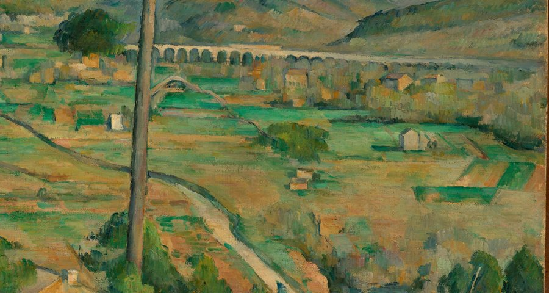
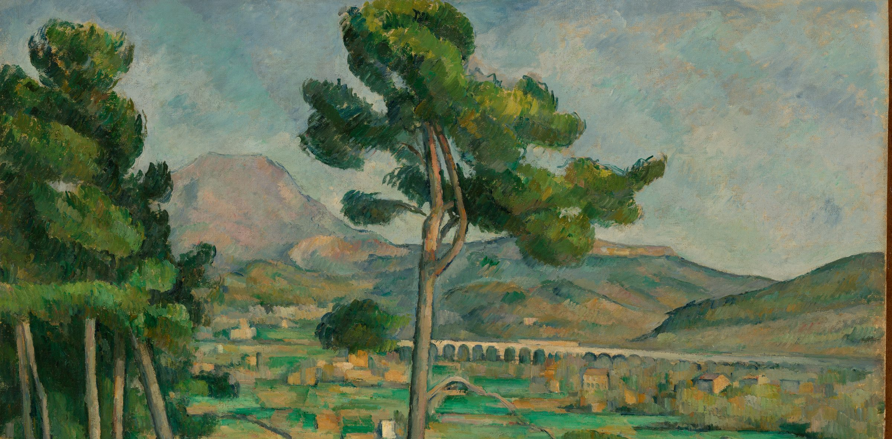
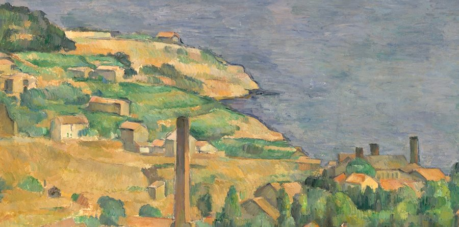
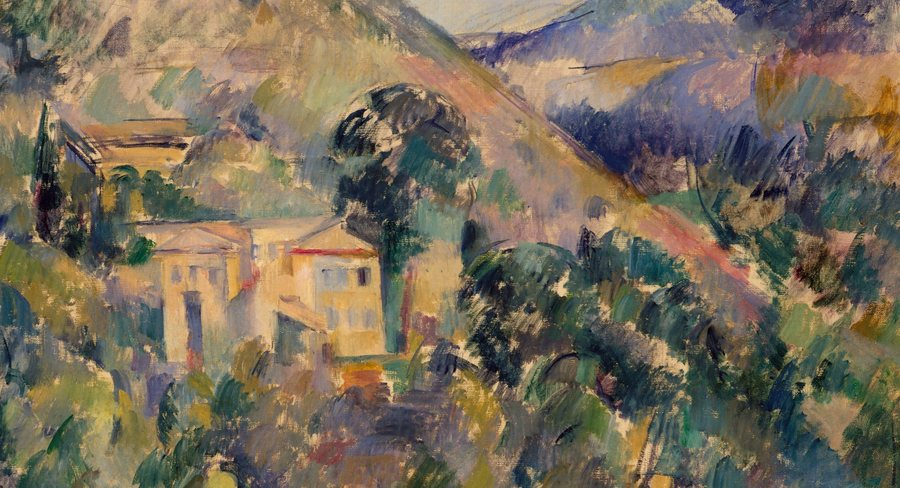
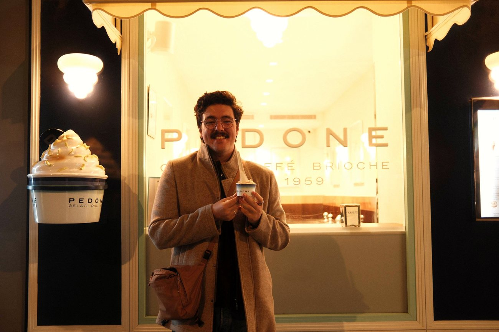

Show formats
From concept to release. La Sopa was created, booked, directed and shipped weekly: 41 episodes, 5.1 million people reached, a title sponsor closed and built into the segments.
La Sopa41 episodes5.1M reached

Pedro Brauner is a content and creative strategist working in esports: show formats, brand voice and editorial systems for rdy.gg, and La Sopa, Peru's leading Spanish-language Dota 2 podcast. Journalist by training, in Portuguese, Spanish and English.
The job changed from telling the story to building the place where the story gets told. The eye is the same.

From concept to release. La Sopa was created, booked, directed and shipped weekly: 41 episodes, 5.1 million people reached, a title sponsor closed and built into the segments.

rdy.gg's content strategy from the ground up: guidelines, editorial standards, content pillars, and four original series with full identities, built with the team. Earlier, EDGE Esports grew impressions by 1,000% in 45 days.

Features, interviews and reportage from five years covering competitive gaming: the Major in Berlin, the World Cup in Riyadh, a champion who almost quit everything. In three languages.
Shows, formats and pieces. The rdy.gg series belong to the team.

Five years reporting on esports from press rows in Riyadh, Berlin, Seoul and Melbourne taught the eye. Then the job became building the rooms where the stories get told: show formats, brand voices, editorial systems, the occasional data pipeline.
He still writes every day. That part never left.